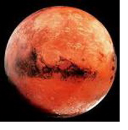

|
Марс в гороскопе
В астрологии с Венерой связывали эмоции, а с Марсом – страстные желания, гнев, умение добиваться желаемого.
Марс в знаках зодиака наделяет человека энергией, отвечает за волю и активность человека, определяет уровень выносливости и конфликтности. От положения Марса в знаках зодиака зависит темперамент человека. Марс определяет степень свободы, физическую и внутреннюю силу, способность преодолевать препятствия. Выбор профессии во многом зависит от положения Марса в знаках зодиака.
Чаще всего Марс проявляется через жест и слово. Марс включается только тогда, когда он получает извне или изнутри импульс. Его заставляют действовать другие планеты: цель – Юпитер, долг – Сатурн, желание – Венера, идея – Меркурий, импульс – Солнце, или инстинктивная реакция – Луна.
Характеристика Марса в Деве представлена ниже:
Марс в Деве
Вы во всем стремитесь к совершенству, у вас высокая требовательность к работе, которую вы сами делаете. Вы уверены: чтобы что-то было сделано как надо, нужно это делать самому. Высокое качество очень важно для Вас, и вы можете потеть над незаметными деталями, которые других совершенно не беспокоят. Вы очень раздражаетесь, когда что-либо делается неправильно. С другой стороны, борясь за совершенство, критикуя других и не доверяя им, вы даже не пытаетесь заниматься многими делами и осуществлять многие планы. Считаете, что у вас на это не хватит сил. Человек скромный и реалистичный в оценке того, чего вы можете достигнуть, часто вы недооцениваете себя. Конечно, если практиковаться, то можно достичь совершенства, приобрести уверенность, практические навыки и стать экспертом в своем деле. Вы дорожите своей энергией и не намеренны напрасно тратить и распылять свои усилия. Нежелание рисковать или предпринять что-то новое, сойдя с проторенной дороги, может иногда ограничить Ваши возможности. Если это привычка станет постоянной, то и Ваши стремления постепенно будут ограничиваться. Вы хладнокровны, логичны и обладаете научным умом. Вы трудолюбивы и полны энтузиазма, если чувствуете, что способны сделать значительный вклад в осуществление какой-нибудь важной цели. Вы фундаментальны и систематичны, любите рутинную работу и умеете выполнять даже самые монотонные задания. В сексе вы идеалист, но это не всегда подразумевает склонность к платоническим связям. Иногда кажется, что вы недостаточно страстны и мечтательны. Вы очень много работаете, но все же старайтесь не слишком усердствовать, так как это может плохо отразиться на вашем здоровье. Это благоприятная позиция для профессии врача, но она также часто означает талант к садоводству. Если есть тяжелые аспекты, старайтесь не быть слишком критичным, сомневающимся человеком.
|


 Тайна имени
Тайна имени Марс в знаке Дева
Марс в знаке Дева